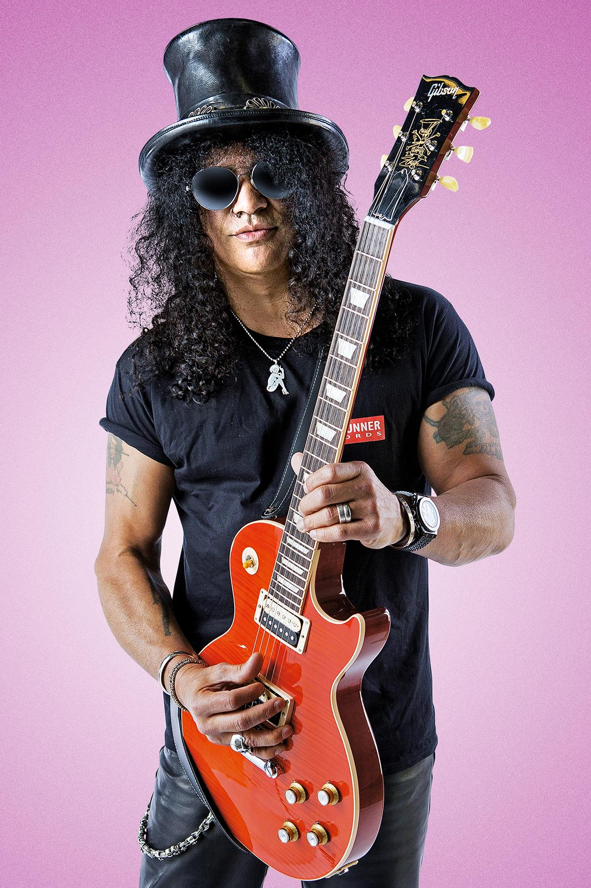
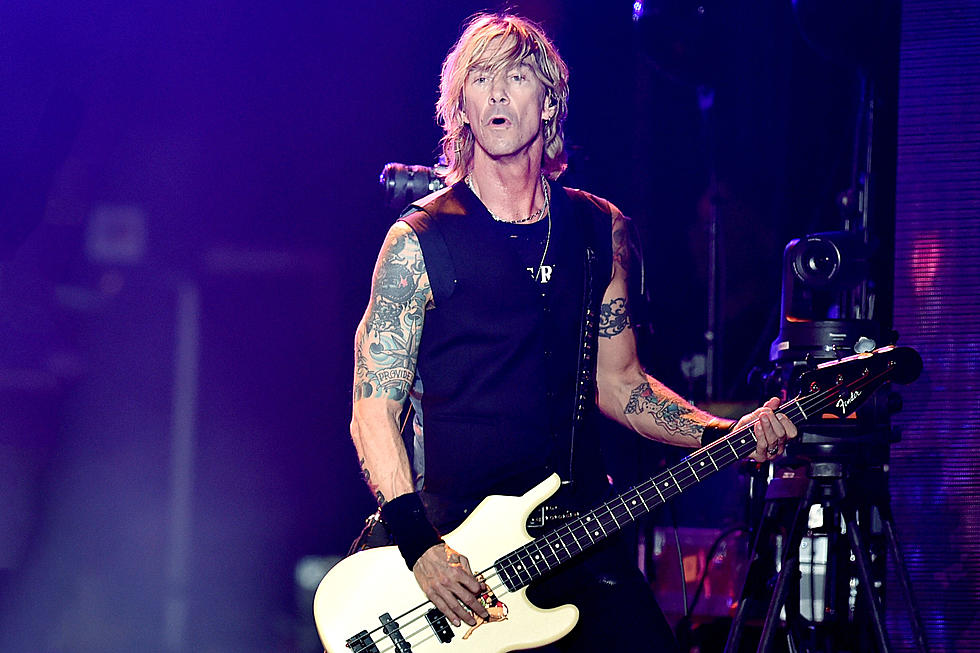
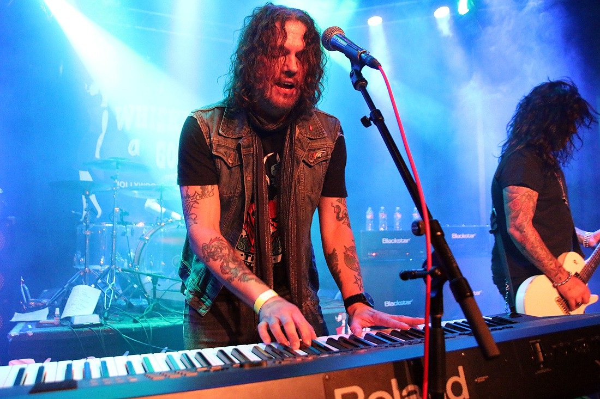

Axl Rose: voz, piano (1985-actualidad)

Slash: guitarra principal (1985–1996, 2016-actualidad)

Duff McKagan: bajo, coros (1985–1998, 2014, 2016-actualidad)

Richard Fortus: guitarra rítmica (2002-actualidad)

Frank Ferrer: batería (2006-2018)

Dizzy Reed: teclados, piano, sintetizador, coros (1990-actualidad)

Melissa Reese: teclados, piano, sintetizador, coros (2016-actualidad)